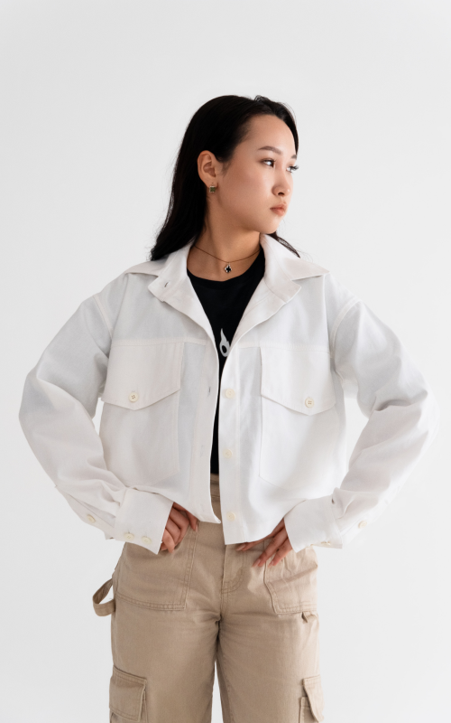
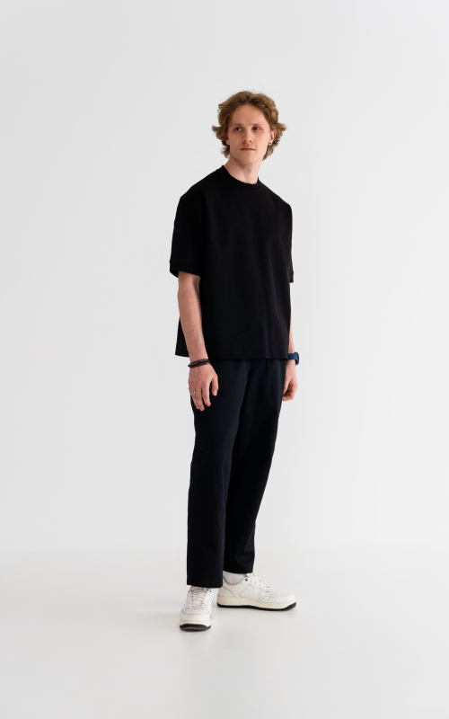

8 (995) 281 45 81
Душа - это основа всего, а Нити души - это работа жизни
Цель и Идея бренда
Самая первая коллекция созданная нами. Наполненная идеями комфота и стиля, доказывает что выглядить стильно легко.
|
Качество. Нити Души использует высококачественные материалы и технологии, обеспечивая долговечность и устойчивость к износу. |
Внимание к деталям. Каждый элемент дизайна тщательно проработан для идеальной посадки и удобства. |
||||
|
Доступность. Компания предлагает качественную одежду по доступным ценам, делая бренд доступным для широкой аудитории. |
Комфорт. Мы создаем одежду, которая не только стильна, но и комфортно носится, используя удобные материалы. |
||||
|
Мода. Всегда в тренде, отражая последние модные тенденции и сохраняя уникальность. |
Лимитированность. Нити Души предлагает ограниченные коллекции, делая каждую вещь не только желанной, но и эксклюзивной. |
Ткани
Мы с особой тщательностью относимся к подбору тканей, ведь от нее зависит ваш комфорт. Ниже несколько главных параметров.
Цена. Чем выше цена ткани, тем выше итоговая стоимость одежды. Мы заботимся, о ее доступной стоимости.
Качество. Только убедившись в качестве ткани после тестов и проверок, мы изготавливаем новую модель.
Дизайн. Мы делаем только ту одежду, в которой будет комфортно вам, но при это будет стильно.
Состав
Производство ткани Россия
Хлопок 100%
Летняя Укороченная рубашка
Укороченная оверсайз футбока
Коллекция “Первая нить”
Самая первая коллекция созданная нами. Наполненная идеями комфота и стиля, доказывает, что выглядеть стильно легко.
Топ
Белая укороченная рубашка состоит из саржи, хлопок 100%. Отлично подойдет для летней погулки. Саржа позволяет телу дышать и греть при сильном ветре. Вещи из саржи легко стирать. Они быстро сохнут и не впитывают запахи.
Широкие штаны сделаны из высокопрочного материала. Они не рвутся, не мнуться, а самое главное они невероятно удобные.
Хранение и Уход
Наши вещи состоят из натуральных материалов, но они не требуют обременительного ухода, все довольно просто. Пару советов после покупки одежды от Нити Души.
Хренение. Весь ассортимент бренда Нити Души не нуждается в особых условиях для хранения. Вся одежда была сделана для носки, а не для муторного в условиях дя хранение.
Стирка. Наша одежда была сделана из натуральных материалов, поэтому режим на стиралке стоит выбирать “бережный” или стирка в ручную.